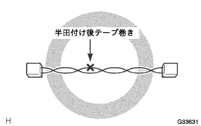
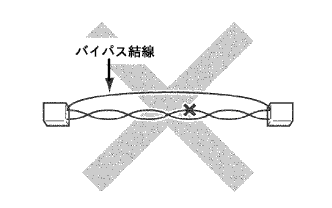
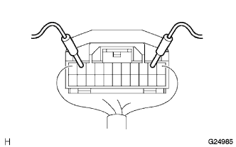

CAN communication system (without VSC) Notes |
|  |
After soldering the repair part, tape winding.
|  |
There is no bypass connection at the restoration site.
|  |
Conduct inspection is basically performed by applying a tester from the back of the connector.
Use a repair wire if you cannot apply the tester from the back of the connector.